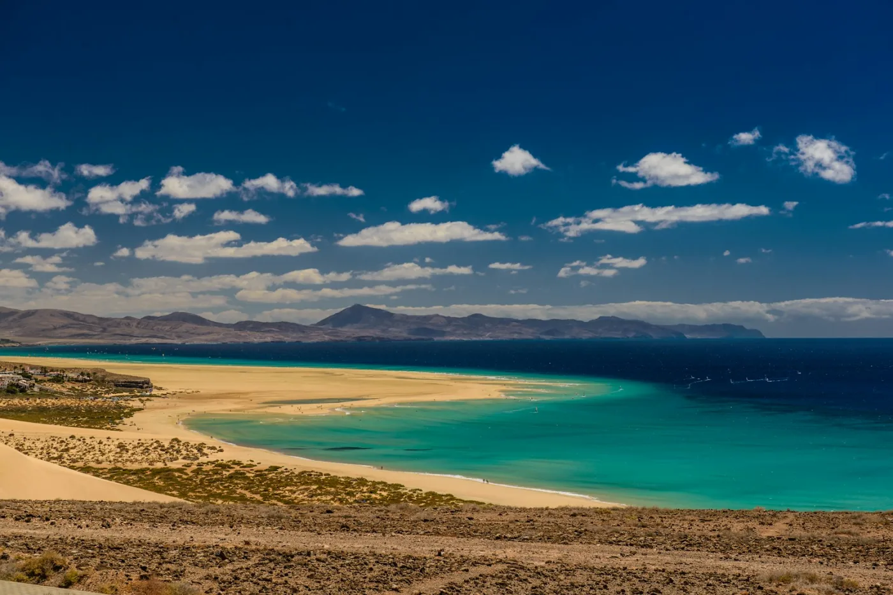
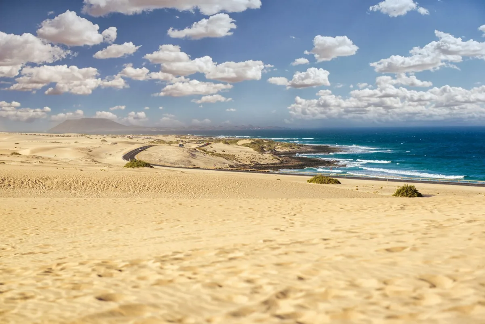
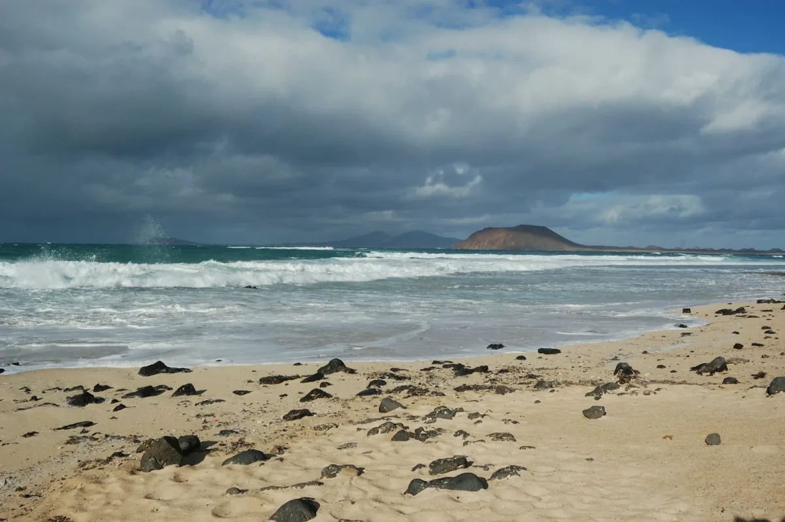
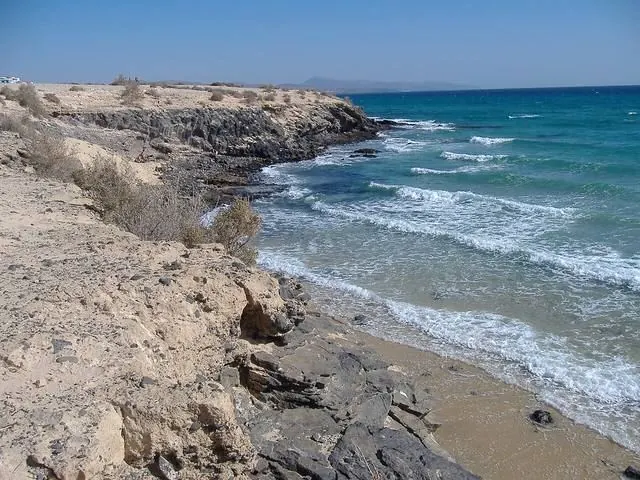
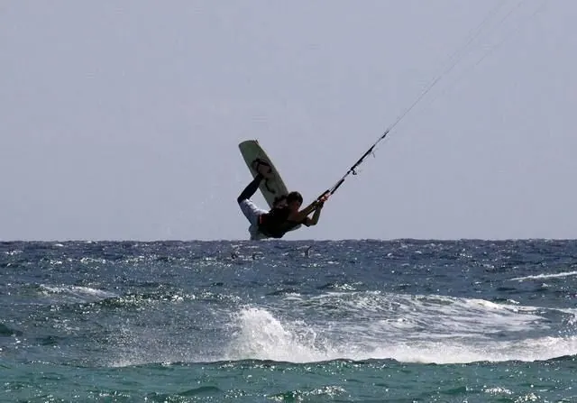

Nicht „24 Grad, 28 km/h“ – sondern: wohin, wann, und worauf achten. Jede Karte kommt aus den Stundenwerten und den Eigenheiten der Orte.
Fuerteventura hat viele Wetter: Der Norden bekommt die Passatwolken, der Süden die Sonne, die Westküste die Wellen. Der Kompass rechnet Wind, Wolken, Tide und Windschatten je Ort zusammen.
Wischen, tippen, mit zwei Fingern zoomen. Die kleine Wochenkarte unten zeigt, wo du bist; „Jetzt“ bringt dich zurück. Der Strich in der Mitte liest die Werte ab.
Punkte = Strandwetter-Note. Tipp auf einen Tag, und der Stundenverlauf springt dorthin.
Auf Fuerteventura entscheidet die Tide über Lagunen und Strandbreite, die Sonne über die Fotos, der Mond über den Abend am Strand.
Nordost, morgens sanft, nachmittags kräftig. Wer das kennt, plant den Strandtag danach.
Wenn der Wind auf Ost dreht, kommt Saharastaub: Sicht trüb, Himmel gelb, Temperaturen hoch. Die App warnt einen Tag vorher.
Halbstündliche Bilder der vier Kameras, mit Zeitraffer der letzten Stunden. Hier als Beispielbilder.



